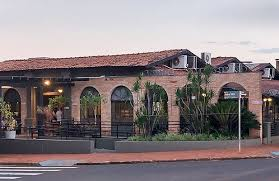

Onde comer em Londrina
Restaurante O Casarão
O Restaurante O Casarão é um dos mais tradicionais de Londrina, conhecido por seu ambiente rústico e sua culinária variada.
O Restaurante O Casarão é um dos mais tradicionais de Londrina, conhecido por seu ambiente rústico e sua culinária variada.